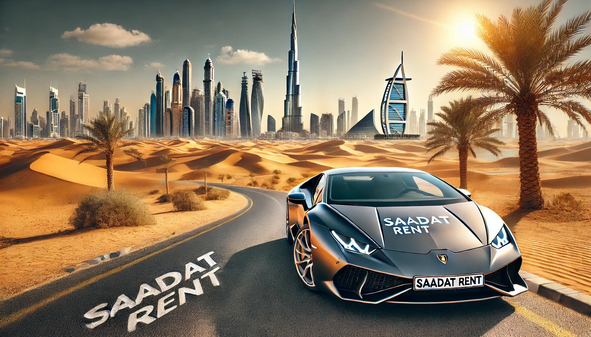

Прокат автомобилей в Дубае: Удобство и Выгода в Одной Услуге
Ищете аренду автомобиля в Дубае по лучшим ценам? Вы пришли по адресу! В этом удивительном городе роскоши и инноваций аренда автомобиля становится не просто удобством, а необходимостью. Сегодня мы расскажем, почему прокат автомобилей в Дубае — это лучший выбор для путешественников, деловых людей и даже местных жителей. А заодно познакомим вас с услугой аренды автомобилей Saadat Rent, которая заслуживает особого внимания.

Почему прокат авто в Дубае — это важно?
Дубай — это город будущего, где небоскребы устремляются в облака, а солнце согревает круглый год. Но как исследовать все его красоты, не полагаясь на общественный транспорт?
- Комфорт и независимость: Общественный транспорт в Дубае хорошо развит, но он не сравнится с удобством личного автомобиля. В арендованной машине вы можете ехать куда угодно и когда угодно, без расписания и очередей.
- Экономия времени: Такси здесь недешевы, а метро имеет свои ограничения. С арендованным авто вы доберетесь до нужного места гораздо быстрее и без лишних хлопот.
- Доступ к уникальным местам: Хотите побывать в пустыне или прокатиться по культовым трассам, таким как Шейх Зайед Роуд? С личным транспортом это становится намного проще.
Преимущества аренды автомобиля в Saadat Rent
Когда дело доходит до выбора компании, у многих возникает главный вопрос: "А можно ли обойтись без скрытых платежей и головной боли?" С Saadat Rent это возможно!
- Прозрачные условия: Saadat Rent предлагает честные и понятные условия аренды. Никаких скрытых комиссий, "подводных камней" и неприятных сюрпризов.
- Доступные цены: Здесь вы найдете аренду автомобилей по лучшим ценам на рынке. Будь то эконом-класс или роскошный спорткар, Saadat Rent всегда предложит выгодный тариф.
- Разнообразие автомобилей: Вы можете выбрать машину на любой вкус: от компактных моделей для городской езды до люксовых автомобилей для особых случаев.
- Отличный сервис: Дружелюбный персонал готов помочь вам в любой ситуации. Будь то вопросы по аренде, техническая поддержка или советы о том, куда лучше поехать.
Какие машины доступны в прокат?
Saadat Rent предлагает широкий выбор автомобилей:
- Эконом-класс: идеально для путешественников с ограниченным бюджетом.
- Средний класс: комфорт и практичность.
- Люксовые авто: почувствуйте себя звездой, путешествуя на Lamborghini или Rolls Royce.
- Внедорожники: для тех, кто планирует поездки в пустыню.
Как арендовать машину в Дубае?
- Выберите авто: Определитесь, какая машина подходит вам лучше всего. Хотите простую и экономичную модель или мечтаете о поездке на Ferrari?
- Оформите заявку: Процесс бронирования у Saadat Rent максимально простой. Вам нужно только выбрать дату, машину и заполнить несколько полей.
- Получите ключи: После оформления аренды вы получите ключи и сможете сразу отправиться в путь.
- Верните авто: Когда ваше путешествие закончится, просто верните машину в указанное место.
Полезные советы по аренде авто в Дубае
- Проверяйте документы: Убедитесь, что у вас есть действующая международная водительская лицензия. Это обязательное требование в ОАЭ.
- Соблюдайте правила дорожного движения: Дубай — это город с высокими штрафами за нарушение правил. Соблюдайте скорость, не пользуйтесь телефоном за рулем и всегда пристегивайтесь.
- Изучите страховку: Saadat Rent предлагает выгодные условия страхования, но важно знать, что входит в покрытие.
- Не забывайте про топливо: Некоторые компании требуют возвращать машину с полным баком. Saadat Rent всегда информирует об этом заранее.
Почему стоит выбрать Saadat Rent?
В мире, где так много предложений, Saadat Rent выделяется своей надежностью и вниманием к клиентам. Это не просто аренда автомобиля, а полноценный сервис, который сделает ваше путешествие комфортным и незабываемым.
Чувство свободы за рулем
Aренда авто в Дубае — это не только удобство, но и настоящее приключение. Представьте: вы садитесь за руль, включаете кондиционер (потому что в Дубае жарко даже зимой) и отправляетесь на побережье Персидского залива. Или мчитесь по пустыне, наслаждаясь закатом. Это ощущения, которые невозможно забыть.
Nемного юмора
Кстати, если вы решили арендовать роскошное авто, будьте готовы к вниманию. В Дубае люди могут подумать, что вы знаменитость или миллиардер, приехавший подписать контракт на строительство нового небоскреба. Главное — не разочаровывать их!
Заключение
прокат автомобилей в Дубае — это идеальный способ исследовать город и его окрестности. С Saadat Rent вы получите не только автомобиль, но и спокойствие, зная, что вас ждет лучший сервис без лишних хлопот.
Готовы к своему следующему приключению? Бронируйте автомобиль уже сегодня и начните исследовать Дубай на своих условиях!